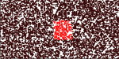
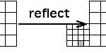
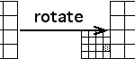
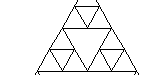

| Exercise 1. Use the standard square transformations to locate several length 3 address regions. |  |
| Exercise 2. Include a reflection into one of the transformations, adjusting the translations so the resulting attractor remains the unit square. How does this change the locations of several length 3 address regions? |  |
| Exercise 3. Include a rotation into one of the transformations, adjusting the translations so the resulting attractor remains the unit square. How does this change the location of a length 3 address region? |  |
| Exercise 4. Locate address 321 with the standard equilateral gasket rules. Given several different regions in the gasket, find different transformations that generate the gasket and assign address 321 to the selected regions. |  |
Return to Address Lab.